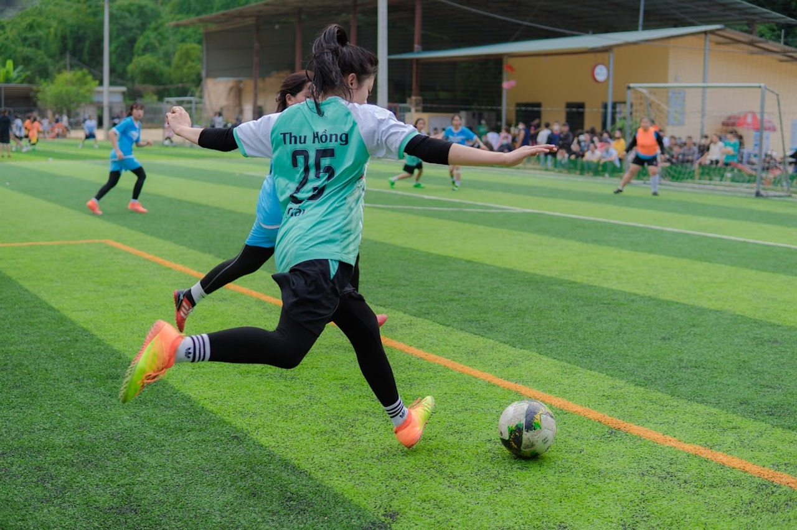
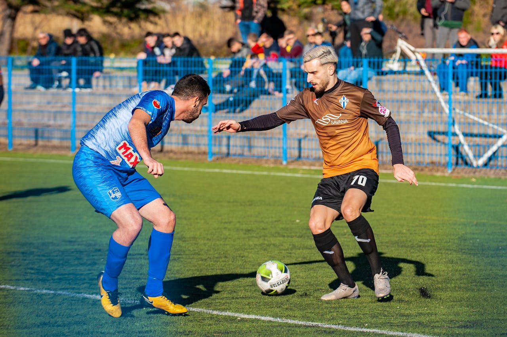
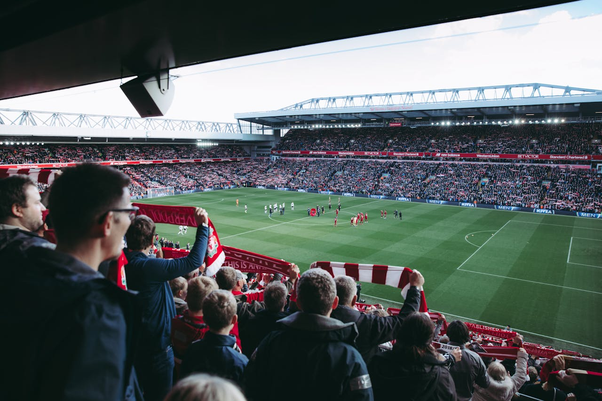

Üdvözlünk a Fantazia Focii-n! Íme egy részletes útmutató, amely segít elkezdeni és a
legtöbbet kihozni a fantasy futball élményből.

Regisztrálj és Hozd Létre a Fiókodat
Regisztráció: Látogass el a Fantazia Focii főoldalára, és kattints a
„Regisztráció”
gombra. Add meg személyes adataidat, például neved, e-mail címed, és hozz létre
egy biztonságos jelszót. Gyors regisztráció érdekében használhatod a közösségi
média fiókjaidat is.
Fiók Ellenőrzése: A regisztráció után kapsz egy megerősítő e-mailt. Kattints a
linkre
az e-mailben, hogy aktiváld a fiókodat és befejezd a regisztrációs folyamatot.

Csatlakozz vagy Hozz Létre Egy Ligát
Csatlakozás Ligához: Miután bejelentkeztél, böngéssz a rendelkezésre álló ligák
között. Szűrheted a ligákat típus, méret vagy szabályok szerint. Válassz egy neked
tetsző ligát, és csatlakozz hozzá. Néhány liga nyilvános, míg mások privátak, és
meghívást igényelnek.
Liga Létrehozása: Ha személyre szabottabb élményre vágysz, hozd létre saját
ligádat a „Liga Létrehozása” gombra kattintva. Állítsd be a liga nevét, szabályait,
pontozási rendszerét és draft beállításait. Küldj meghívó linket barátaidnak,
családtagjaidnak vagy kollégáidnak, hogy csatlakozzanak a saját ligádhoz.
Draftolj Csapatot
Készülj a Draftra: Ismerkedj meg a draft formátumával (kígyó vagy
aukció), és
készíts draft stratégiát. Kutass a játékosok statisztikáiról, legutóbbi
teljesítményükről
és közelgő mérkőzéseikről, hogy megalapozott döntéseket hozhass.
Vegyél Részt a Draftban: Csatlakozz az élő drafthoz a meghatározott időpontban,
vagy hagyd, hogy a rendszer automatikusan draftolja a játékosokat, ha nem tudsz
részt venni. Válassz játékosokat az előrejelzett teljesítményük és a csapatod igényei
alapján. Ne feledkezz meg arról, hogy kiegyensúlyozott csapatot építs a
legfontosabb játékosokból és megbízható tartalékokból.
Kezeld a Rostered
Állítsd Be a Kezdőcsapatot: Minden héten állítsd be a
kezdőcsapatodat a játékosok
formája, mérkőzések és sérülések alapján. Bizonyosodj meg róla, hogy a kezdő
tizenegyben a legjobb játékosok szerepelnek az adott hét mérkőzéseihez.
Cserélj és Igazíts: Kövesd nyomon a játékosok
teljesítményét és sérüléseit. Cseréld
le a gyengén teljesítő vagy sérült játékosokat tartalékokra vagy szabad ügynökre.
Használj waiver wire-t, hogy stratégiai változtatásokat végezhess a rostereden.
Csere Játékosokkal: Cserélj játékosokat más ligatagokkal, hogy megerősítsd a
csapatodat. Javasolj cseréket a csapatod szükségletei alapján, és tárgyalj a
feltételekről. Gondosan vizsgáld meg a cserélési ajánlatokat, mielőtt elfogadod őket.
Kövesd Nyomon a Játékosok Teljesítményét
Pontozási Rendszer: Ismerd meg a liga pontozási
rendszerét, beleértve, hogyan
kapnak pontokat a gólokért, gólpasszokért, védekezési akciókért és egyéb
mutatókért. Rendszeresen ellenőrizd az oldaladon a pontozási szabályokat
bármilyen frissítés vagy pontosítás érdekében.
Élő Frissítések: Kövesd nyomon a játékok és a játékosok
teljesítményét. Ellenőrizd
a csapatod pontszámát, állását és a játékos statisztikáiban bekövetkezett
változásokat. Használj fel ezen információkat időben történő igazításokhoz a
rostereden.
Vegyél Részt a Liga Tevékenységeiben
Heti Mérkőzések: Versenyezz más csapatokkal a ligádban minden
héten. Tűzz ki
célokat a mérkőzések megnyerésére és a liga állásának javítására. Kövesd nyomon
a teljesítményedet és alakítsd a stratégiádat a szezon előrehaladtával.
Kapcsolódj a Közösséghez: Csatlakozz a ligák beszélgetéseihez,
fórumokhoz vagy
chat csoportokhoz, hogy megossz stratégiákat, beszélgess a játékosok
teljesítményéről és kapcsolatba lépj más fantasy futball rajongókkal. Vegyél részt
bármilyen liga-specifikus eseményen vagy kihíváson a tapasztalatod fokozása
érdekében.
Végezze el a Kiigazításokat
Kövesd Nyomon a Sérüléseket és Híreket: Maradj naprakész a
játékos sérülési
jelentéseivel és bármilyen jelentős hírekkel, amelyek befolyásolhatják a teljesítményt.
Igazítsd a rostered a sérülések, eltiltások vagy egyéb változások szerint.
Használj Waiver Wire-t: Rendszeresen ellenőrizd a waiver wire-t, hogy új,
kiemelkedő teljesítményt nyújtó játékosokat találj. Végezzen stratégiai
változtatásokat a csapatodon és cserélj le gyengén teljesítő játékosokat.
Élvezd a Szezont
Finomítsd a Stratégiát: Folyamatosan
elemezd a csapatod teljesítményét és
finomítsd a stratégiádat. Vegyél figyelembe tényezőket, mint a játékosok formája,
mérkőzések és közelgő események, hogy a legjobb döntéseket hozhasd.
Ünnepeld és Tanulj: Ünnepeld a sikereidet és tanulj a
veszteségekből. Gondold
végig a csapatod teljesítményét és stratégiáit a jövőbeli szezonokhoz való
felkészüléshez. Élvezd a fantasy futball versenyszellemét és közösségét.
Szezon Vége
Áttekintés és Reflexió: A szezon végén tekintsd át a
csapatod teljesítményét és
eredményeit. Gondolkodj el a sikeres stratégiákon és a fejlődési lehetőségeken.
Visszajelzés: Oszd meg véleményedet és javaslataidat velünk,
hogy segíts a
Fantazia Focii fejlesztésében a jövőbeli szezonokhoz. A te hozzájárulásod értékes a
fantasy futball élmény javításában minden felhasználó számára.

Iratkozzon fel hírlevelünkre, hogy naprakész legyen!
A fantáziasportok magukban foglalják egy virtuális csapat létrehozását valós sportolókból,
és
a valós játékokon nyújtott tényleges teljesítményük alapján versenyeznek. A pontokat a
játékosok statisztikái és eredményei alapján szerzik.
A kezdéshez regisztráljon egy fiókot, hozzon létre fantáziacsapatot, és csatlakozzon egy
ligához. Miután összeállította csapatát, kezelje összeállítását, és kövesse nyomon játékosai
teljesítményét a szezon során.
Az alapvető részvétel általában ingyenes. A választott versenyektől vagy ligáktól függően
azonban lehetnek prémium szolgáltatások vagy bajnokság nevezési díjai.
A pontokat a csapatod játékosainak valós teljesítménye alapján ítélik oda, például gólok,
gólpasszok és védekező akciók. Részletes információkért tekintse meg oldalunk pontozási
rendszerét.
A játékos statisztikák valós időben frissülnek, vagy röviddel a meccsek befejezése után.
Tekintse meg a webhelyet a legfrissebb frissítésekért és a pontos pontszámokért.
Ha a csapatod egyik játékosa megsérül, a bajnokság szabályaitól függően lecserélheted egy
másik játékosra a kispadodról vagy a szabadügynök-készletből.